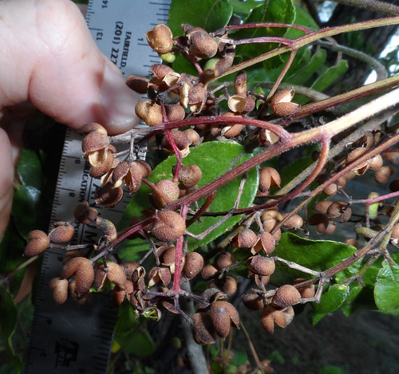

Prickly Ash / Toothache Tree
Scientific name(s): Zanthoxylum clava-herculis, Zanthoxylum hirsutum, and Zanthoxylum fagara
Abundance: common
What: leaves, dried fruit
How: chew a small bit of leaf to numb mouth/lips, use dried fruit Sichuan seasoning
Where: shaded woods
When: whenever leaves are present
Nutritional Value: medicinal, antioxidants
Other uses: Hit people with spiny club made from trunk
Dangers: Slightly toxic, do not swallow leaves or bark
Medicinal Summary
Bark, Leaves, Berries - oral anesthetic (poultice)
Bark - sweat inducer (tincture)
Prickly ash (Zanthoxylum clava-herculis) bark and spines.
Mature tree trunk of Zanthoxylum clava-herculis.
Compound leaf of Prickly Ash.
Almost mature berries (mid-summer).
Ripe berries ejecting seeds. (mid-summer)

Empty seed husks. (late summer)

Seed husks in winter.
Bare tree in winter.
Prickly Ash trees are found not just in Texas but also worldwide. Here in North America they go by names such as Hercule's Club, Tickle-Tongue tree, and Toothache tree. It's very common to see these trees along fence line because ranchers would plant them there because cattle don't like rubbing against them, so it would protect the fences. In more modern times these trees appear along fences lines thanks to seeds in bird poop.
The leaves and bark of these trees contains a fairly strong anesthetic. Native Americans would cut off one of the thorns and place it on the gum near their hurting tooth. After a few minutes that area would go numb, allowing a friend to yank the bad tooth out. Pioneers and early Texas settlers would use the leaves instead of the bark/spines. I have no idea why one people used one part and other people used a different part for the same treatment.
These trees produce a massive amount of bright red berries in the fall. In China the dried, roasted berries of similar species of Zanthoxylums are used as the main ingredient of Sichuan seasoning. Pick the ripe berries and let them dry until they split open revealing dark seeds. Remove the seeds and coarse-grind the husks for use in many Chinese recipes. The husks can also by dry-roasted in a frying pan to give a richer, somewhat smokey flavor. The numbing aspect of the berries tempers their spiceiness into a unique flavor.